생산자동화산업기사 (2003-03-16 기출문제)
1과목: 기계가공법 및 안전관리
1. 선삭(turning)작업에서 일반적으로 하지 않는 것은?
- 기어가공작업
- 나사깎기
- 테이퍼작업
- 널링
(정답률: 60%)

2. ø 40의 연강봉에 리드(lead)240㎜의 비틀림 홈을 밀링에서 깎고자 한다. 이 때 테이블은 몇도 몇분 회전시켜야 하는가?
- 약 27° 38′
- 약 35° 48′
- 약 42° 51′
- 약 50° 06′
(정답률: 37%)
3. 경도가 가장 큰 열처리 조직은?
- 오스테나이트(austenite)
- 마르텐사이트(martensite)
- 솔바이트(sorbite)
- 펄라이트(pearlite)
(정답률: 50%)
4. 연삭 숫돌의 파손 원인이 아닌 것은?
- 숫돌과 공작물, 숫돌과 지지대간에 불순물이 끼었을 경우
- 숫돌이 과도한 고속으로 회전하는 경우
- 숫돌의 측면을 공작물로 심하게 삽입됐을 경우
- 숫돌이 진원이 아닐 경우
(정답률: 58%)
5. 스프링 백(spring back)이란 ?
- 스프링에서 장력의 세기를 나타내는 척도이다.
- 스프링의 피치를 나타낸다.
- 판재를 구부릴 때 하중을 제거하면 탄성에 의해 약간 처음 상태로 돌아가는 것이다.
- 판재를 구부렸을 때 구부린 모양이 활 모양으로 되는 현상이다.
(정답률: 84%)
6. 공작물 고정 장치가 없는 지그는?
- 템플릿 지그(template jig)
- 플레이트 지그(plate jig)
- 앵글플레이트 지그(angle plate jig)
- 테이블 지그(table jig)
(정답률: 38%)
7. 소성가공에서 열간가공과 냉간가공을 구분하는 온도는?
- 금속이 녹는 온도
- 변태점 온도
- 발광 온도
- 재결정 온도
(정답률: 62%)
8. 배럴가공(barrel finishing)을 하면 여러가지 결과를 얻을 수 있다. 여기에 해당되지 않는 것은?
- 연삭의 효과
- 스케일 제거
- 버니싱(burnishing) 작용
- 도금의 효과
(정답률: 60%)
9. 연삭작업에서 눈메꿈(loading)을 일으킨 칩을 제거하여 깎임새를 회복시키는 작업은?
- 드레싱(dressing)
- 보딩(boarding)
- 크러싱(crushing)
- 셰이핑(shaping)
(정답률: 56%)
10. 파이프끼리 서로 맞대기 용접을 하는데 가장 좋은 용접 결과를 얻을 수 있는 것은?
- 가스 압접
- 플래시버트 용접(flash butt welding)
- 고주파 유도 용접
- 초음파 용접
(정답률: 48%)
11. 만네스만식 제관법은 다음의 어느 제관법에 속하는가?
- 단접관법
- 용접관법
- 천공법(piercing process)
- 오무리기법(cupping process)
(정답률: 67%)
12. 공작물의 직경이 ø 50㎜인 경강을 세라믹 공구로 절삭속도 300m/min의 조건으로 선삭가공하려고 할 때, 주축 회전수는?
- 약 480rpm
- 약 1350rpm
- 약 1910rpm
- 약 2540rpm
(정답률: 48%)
13. 직류 아크용접에서 모재에 (+)극, 용접봉에 (-)극을 연결하여 용접할 때의 극성은?
- 역극성
- 정극성
- 용극성
- 모극성
(정답률: 55%)
14. 압연가공에서 강판을 압연할 때, 사용하는 롤러(roller)는?
- 원통형 roller
- 홈형 roller
- 개방형 roller
- 밀폐형 roller
(정답률: 56%)
15. 매치 플레이트(match plate)에 대한 설명 중 맞는 것은?
- 주형에서 소형 제품을 대량으로 생산할 때 사용된다.
- 목형의 평면을 깎을 때 사용된다.
- 주형을 다져 목형을 만들 때 사용된다.
- 주물사의 입도를 분류할 때 사용된다.
(정답률: 25%)
16. 프레스가공 방식에서 상하형이 서로 무관계한 요철( )을 가지고 있으며 재료를 압축함으로써 상하면상에는 다른 모양의 각인(刻印)이 되는 가공법은?
- 코이닝 가공(coining work)
- 굽힘가공(bending work)
- 엠보싱가공(embossing work)
- 드로잉가공(drawing work)
(정답률: 45%)
17. 줄 눈금의 크기 표시가 맞는 것은?
- 1[㎜]2내에 있는 눈금의 수
- 1[㎜]에 대한 눈금의 수
- 1[inch]에 대한 눈금의 수
- 1[inch]2내에 있는 눈금의 수
(정답률: 34%)
18. 어미자의 최소눈금이 0.5㎜이고 아들자 24.5㎜를 25등분한 버니어캘리퍼스의 최소측정값은?
- 0.⑤㎜
- 0.01㎜
- 0.025㎜
- 0.02㎜
(정답률: 45%)
19. 호닝(honing)작업에서 옳지 않은 것은?
- 가공시간이 짧다.
- 진원도 및 직선도를 바로 잡을 수 있다.
- 크기를 정확히 조절할 수 있다.
- 표면 정밀도를 향상시키지 못한다.
(정답률: 57%)
20. 나사의 측정 대상이 아닌 것은?
- 유효지름
- 리드각
- 산의 각도
- 피치
(정답률: 39%)
2과목: 기계제도 및 기초공학
21. 다품종 소량 생산에 맞추어 쉽게 다른 모델의 가공공정으로 변환할 수 있도록 장치된 자동화 시스템을 무엇이라고 하는가?
- CAM
- FMS
- CAE
- CIM
(정답률: 70%)
22. 마찰차의 응용범위와 거리가 가장 먼 항목은?
- 전달력이 크지 않고 속도비가 중요하지 않은 경우
- 회전속도가 커서 보통기어를 쓰기 어려울 경우
- 양 축간을 자주 단속할 필요가 있을 경우
- 정확한 속도비가 필요할 경우
(정답률: 30%)
23. 50kgf의 하중을 받고 처짐이 16mm생기는 코일스프링에서 코일의 평균직경 D=16mm, 소선직경 d=3mm, G = 0.84 × 104kgf/mm2 이라 할 때 유효권수 n은 얼마인가?
- 3
- 5
- 7
- 9
(정답률: 22%)
24. 선과 같은 형상 엔티티의 끝점을 신장하거나 수축하는데 사용하는 기능으로 폐쇄 엔티티는 반시계 방향의 규칙에 따르는 기능은?
- Entity extending
- Entity zoomming
- Entity panning
- Entity trimming
(정답률: 31%)
25. 서로다른 CAD시스템간의 데이터 베이스가 호환성을 가질 수 있도록 모델의 입, 출력 데이터 표준형식(format)으로 작성하는 기능에 해당되는 것은?
- IGES
- GND
- RT
- TD
(정답률: 54%)
26. 마찰차의 접촉면에 종이, 가죽 및 고무 등의 비금속 재료를 붙이는 이유는 무엇인가?
- 마찰각을 작게 하기 위하여
- 마찰차의 마멸을 방지하기 위하여
- 마찰계수를 크게 하기 위하여
- 회전수를 줄이기 위하여
(정답률: 41%)
27. 다음 중 CNC 공작기계의 정보 흐름으로 옳은 것은?
- 도면 - 정보처리회로 - 서보기구 - 기계본체
- 도면 - 서보기구 - 정보처리회로 - 기계본체
- 도면 - 정보처리회로 - 기계본체 - 서보기구
- 도면 - 서보기구 - 기계본체 - 정보처리회로
(정답률: 36%)
28. 볼베어링에서 베어링 하중을 2배로 하면 수명은 몇 배로 되는가?
- 4배
- 1/4배
- 8배
- 1/8배
(정답률: 30%)
29. 저널의 지름이 25 mm, 길이가 50 mm, 베어링하중이 3000kgf인 저어널 베어링에서 베어링 압력(kgf/mm2)은?
- 2.4
- 3.0
- 3.6
- 4.2
(정답률: 38%)
30. CNC 공작기계의 여러가지 동작을 하기 위한 각종 모터를 제어하고, 주로 on/off 기능을 수행하는 기능은?
- 주축기능
- 준비기능
- 보조기능
- 공구기능
(정답률: 48%)
31. 폭(b) × 높이(h) = 10 × 8인 묻힘키이가 전동축에 고정되어 25,000 ㎏f.㎜의 토크를 전달할 때, 축지름 d는 몇 ㎜ 정도가 적당한가? (단, 키이의 허용 전단응력은 3.7 ㎏f/㎜2 이며, 키이의 길이는 46㎜ 이다.)
- d = 29.4
- d = 35.3
- d = 41.7
- d = 50.2
(정답률: 17%)
32. 컴퓨터의 3대 장치는?
- 입출력장치, 기억장치, 연산장치
- 입력장치, 중앙처리장치, 출력장치
- 입력장치, 출력장치, 연산장치
- 입출력장치, 기억장치, 중앙처리장치
(정답률: 27%)
33. 2톤의 하중을 들어 올리는 나사 잭에서 나사 축의 바깥지름을 구한 것으로 맞는 것은? (단, 허용인장응력 = 6㎏f/㎜2이고, 비틀림 응력은 수직응력의 1/3 정도로 본다.)
- 24㎜
- 26㎜
- 28㎜
- 30㎜
(정답률: 17%)
34. 다음 중 소수점을 사용할 수 있는 NC의 어드레스로만 짝지어진 것은?
- X, Z, P
- I, W, P
- X, K, F
- M, S, T
(정답률: 34%)
35. 다음 그림에서 점 A(2,2,2)를 X, Y, Z방향으로 각각 2, 1, -1만큼 평행 이동시킬 경우 B의 좌표값은?
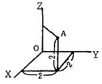
- (4,3,1)
- (1,1,3)
- (2,-1,2)
- (-2,1,-2)
(정답률: 69%)
36. 작업중 CNC 공작기계에 이상이 발생했을때 조치 내용으로 알맞지 않는 것은?
- 비상 안전 스위치를 즉시 누른다.
- 작업을 멈추고 원인을 확인 제거한다.
- 파라메터를 삭제한다.
- Alarm 내용을 확인 수정한다.
(정답률: 69%)
37. CAD 시스템에서 제공하는 기능으로 엔티티를 생성할 수 없다고 생각되는 것은?
- 원에 내접 또는 외접하는 다각형 생성
- 중심점과 반지름만으로 원호 생성
- 세 점을 통과하는 원을 생성
- 두 원에 접하는 직선을 생성
(정답률: 34%)
38. 축간거리 55 ㎝인 평행한 두축 사이에 회전을 전달하는 한쌍의 평기어에서 피니언이 124 회전할 때 기어를 96회전 시키려면 피니언의 피치원지름을 얼마로 하면 되겠는 가?
- 124㎝
- 96㎝
- 48㎝
- 62㎝
(정답률: 27%)
39. 주조, 단조, 리벳이음 등에 비해 용접 이음의 장점으로 틀린 것은?
- 사용재료의 두께 제한이 없다.
- 기밀 유지에 용이하다.
- 작업 소음이 많다.
- 사용기계가 간단하고, 작업 공정수가 적어 생산성이 높다.
(정답률: 55%)
40. 회전속도가 200rpm으로 10㎰을 전달하는 연강 실체원축의 지름이 얼마 정도인가? (단, 허용응력 τ = 210㎏f/㎝2이고, 축은 비틀림 모멘트만을 받는다.)
- d = 44.3㎜
- d = 49.1㎜
- d = 54.7㎜
- d = 59.8㎜
(정답률: 8%)
3과목: 자동제어
41. 다음 밸브의 명칭은?
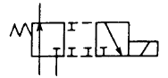
- 2포트 전환밸브
- 3포트 전자 전환밸브
- 4포트 교축 전환밸브
- 5포트 파일럿 전환밸브
(정답률: 63%)
42. 10진법의 수 0 에서 9를 2진법으로 표현하기 위한 최소 자리수는?
- 2
- 4
- 6
- 8
(정답률: 90%)
43. 서보 전동기는 서보기구에서 주로 어느 부분의 기능을 담당하는가?
- 비교부
- 검출부
- 조작부
- 제어부
(정답률: 32%)
44. 그림과 같은 복동 실린더의 설명으로 잘못된 것은?
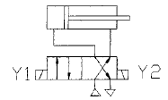
- 솔레노이드 Y1에 전기가 공급되면 실린더는 전진한다
- 전 후진시 모두 작업이 진행될 수 있다
- 전진시보다 후진시 속도가 빠르다
- 전진 행정 보다 후진 행정시 추력이 더 크다
(정답률: 17%)
45. 유압장치에서 플래싱(flashing)을 하는 목적은?
- 유압장치내 이물질 제거
- 유압장치의 점검
- 유압장치의 고장방지
- 유압장치의 유량증가
(정답률: 53%)
46. 래더 다이어그램(ladder diagram)에 대한 설명으로 옳은 것은?
- 릴레이 제어회로의 표현에 사용된다
- 위치제어 문제의 정확한 해결에 사용된다
- 프로그램 메모리에 저장되는 프로그램이다
- 제어 시스템에서 부품의 연결을 나타내는 계획도이다
(정답률: 50%)
47. 면적이 10cm2인 곳을 50kgf의 무게로 누를때 면적에 작용하는 압력은?
- 5kgf/㎝2
- 10kgf/㎝2
- 58gf/㎝2
- 5kgf/m2
(정답률: 69%)
48. 다음중 논리대수의 공식이 잘못된 것은?
- A + B = B + A
- (A + B) + C = A + (B + C)
- (A + B)ㆍB = AㆍB
- A + (BㆍC) = (A + B)ㆍ(A + C)
(정답률: 53%)
49. 공기압에 사용되는 압력조절밸브(감압밸브)의 용도는?
- 회로 내의 압력을 감압, 일정하게 유지시킨다.
- 실린더를 순차적으로 작동시킨다.
- 실린더의 속도를 조절한다.
- 압력변화를 전기신호로 바꾸어 주는 변환기 이다.
(정답률: 75%)
50. 다음 공유압 기호의 명칭은 무엇인가?
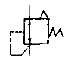
- 파일럿작동형 감압밸브
- 릴리프붙이 감압밸브
- 일정비율 감압밸브
- 파일럿 작동형 시퀀스밸브
(정답률: 63%)
51. 블록선도의 입출력비(C/R)는?
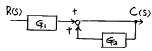
- 1/(-G1G2)
- G1/(-G2)
- G91/(1-G2)
- G1G2/(+G2)
(정답률: 32%)
52. 다음 기호 중 열 교환기가 아닌 것은?
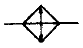
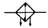
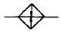
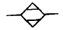
(정답률: 65%)
53. 다음중 주파수 영역에서 속응성 및 안정도를 표시하기위한 양이 아닌것은?
- 위상여유
- 대역폭
- 게인여유
- 피크시간
(정답률: 58%)
54. 다음 중 PLC의 장점이 아닌 것은?
- 프로그래밍 및 설치가 용이하다
- 종래의 계전기 시스템보다 처리 속도가 빠르다
- 비용이 절감된다
- 신뢰도가 높다
(정답률: 54%)
55. 다음 중 유압 회로에 발생하는 서지(surge)압력을 흡수할 목적으로 사용되는 회로는?
- 블리드 오프 회로
- 압력 시퀀스 회로
- 어큐물레이터 회로
- 동조 회로
(정답률: 35%)
56. 제어동작 결과 정상오차를 발생시킬 수 있는 제어는?
- 비례제어
- 적분제어
- 비례적분제어
- 비례적분미분 제어
(정답률: 30%)
57. s평면에서 특성 방정식의 근이 허수축상에 복소근으로 존재할 때 계단 응답의 형태는?
- 수렴
- 발산
- 지속진동
- 무응답
(정답률: 48%)
58. 자동화에서 센서를 사용할 때 고려하여야 할 사항 중 틀린 것은?
- 제조회사
- 신뢰성과 내구성
- 반응속도
- 정확성
(정답률: 48%)
59. 소용량 펌프와 대용량 펌프를 동일 축상에 조합시켜 각각 다른 유압원이 필요한 경우에 사용되는 펌프는?
- 단단 베인 펌프
- 단연 베인 펌프
- 2연 베인 펌프
- 2단 베인 펌프
(정답률: 35%)
60. 공압에서 사용되는 기기중 습기에 대하여 친화력을 갖는 실리카 겔, 활성 알루미나 등의 고체 건조제를 두 개의 타워 속에 가득 채워 습기와 미립자를 제거하여 초 건조 공기를 토출하며 최대 -70℃ 정도까지의 저노점을 얻을 수 있는 것을 무엇이라 하는가?
- 공랭식 냉각기
- 냉동식 건조기
- 흡수식 건조기
- 흡착식 건조기
(정답률: 50%)
4과목: 메카트로닉스
61. 시퀀스 제어계에서 제어량이 소정의 상태인지 아닌지를 표시하는 2진 신호를 발생하는 부분은?
- 제어부
- 검출부
- 제어대상
- 명령처리부
(정답률: 55%)
62. 전자석(電磁石)의 원리를 이용한 기기가 아닌 것은?
- 릴레이
- 리밋 스위치
- 솔레노이드 밸브
- 마그넷 스위치
(정답률: 59%)
63. 특성 방정식 S2+2S+1=0을 갖는 2차계의 제동비(damping ratio)는?
- 1
- √2
- 1/√2
- 2
(정답률: 16%)
64. 반경류식 공압 피스톤 모터의 회전력과 관계가 없는 것은?
- 공기의 압력
- 로드의 직경
- 피스톤의 수
- 피스톤 행정거리
(정답률: 45%)
65. 빛을 이용하여 물체 유무를 검출하거나 속도, 위치결정에 응용되는 센서는?
- 유도형 센서
- 용량형 센서
- 광 센서
- 리드 스위치
(정답률: 83%)
66. ON/OFF로 제어하는 시스템은 그 특성으로 인하여 제어량이 진동하는 경우가 있다. 이 진동을 억제 시키는데 가장 효과적인 제어기는?
- on/off 제어기
- 비례제어기
- 미분제어기
- 적분제어기
(정답률: 20%)
67. 직류 전동기 운전시 브러시로부터 스파크가 일어나는 경우와 거리가 먼 것은?
- 전압의 부적당
- 보극의 극성 불량
- 정류자편의 오손
- 정류자와 브러시 접촉 불량
(정답률: 31%)
68. 검출체가 작동 영역에 진입하는 순간부터 센서출력이 상태 변화를 가져오는 순간까지의 시간 지연을 무엇이라고 하는가?
- 주기
- 초기지연
- 복귀시간
- 응답시간
(정답률: 61%)
69. 서보기구에 대한 설명중 틀린 것은?
- 검출기의 위치에 따라 폐쇄회로와 반폐쇄회로로 나누어 진다.
- 일반적으로 반폐쇄회로가 많이 사용된다.
- 폐쇄회로는 정밀도가 낮아 거의 사용하지 않는다.
- Robot, NC 공작기계 등에 많이 이용된다.
(정답률: 82%)
70. 다음 중 시간의 변화에 대해 연속적 출력을 갖는 신호는?
- 디지털 신호
- ON-Off 신호
- 접점의 개폐
- 아날로그 신호
(정답률: 56%)
71. 다음에 열거된 제어방식 중 메모리 기능이 없고 부울대수 방정식을 이용하여 해결가능한 제어는?
- 시간에 따른 제어
- 파일럿 제어
- 조합제어
- 아나로그 제어
(정답률: 42%)
72. 다음 그림과 같은 타이밍 차트(timing chart)에서 입력은 A와 B이며, 출력은 Y 일때, 이 타이밍 챠트는 어떤 회로인가? (단, 입.출력 모두 양논리로서 동작한다.)
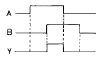
- AND회로
- OR회로
- NOT회로
- NAND회로
(정답률: 75%)
73. 다음 그림과 같은 회로의 출력 Y값을 바르게 표현한 것은?
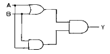
- A
- B
- A·B
- A+B
(정답률: 57%)
74. PLC 출력부 접속되는 외부기기 중 주로 기계장치에 부착되는 것은?
- 전자계산기
- 표시등
- 가변속 모터제어장치
- 전자밸브
(정답률: 27%)
75. 프로그램 플로우 챠트(flow chart)에 대한 설명으로 옳은 것은?
- 기계나 장치의 동작을 순서적으로 표현하는 방법이다
- 그래픽 논리기호의 연결이다.
- 제어의 시간 관계를 표현한다.
- 제어 문제 해결을 위한 컴퓨터이다.
(정답률: 43%)
76. 공압 실린더의 고장을 예방하기 위한 방법이 아닌 것은 ?
- 실린더의 압력강하를 방지하기 위해 가능한 최저속으로 운전한다.
- 실링 교체시 실린더의 내부를 깨끗이 청소한 후 새 윤활유를 주입한다.
- 피스톤 로드는 먼지나 퇴적물로부터 손상을 받지 않도록 주기적으로 청소한다.
- 급유형 실린더의 경우 윤활된 공기를 사용하고 윤활량은 너무 과하지 않도록 한다.
(정답률: 72%)
77. 유압 베인 모터의 1회전당 유량이 50㏄일 때, 공급 압력을 80㎏f/㎝2, 유량을 30ℓ /min 으로 할 경우 최대 회전수(rpm)는?
- 700
- 650
- 625
- 600
(정답률: 19%)
78. 자동화에 이용되는 센서로 Analog양을 Digital양으로 출력하는 검출기는?
- 로터리 엔코더
- 포텐쇼 미터
- 리졸버
- 싱크로너스
(정답률: 50%)
79. 지연시간(time delay)의 설명에 해당되는 것은?
- 응답이 처음으로 최종값에 도달하는데 걸리는 시간
- 응답이 최종값의 10%에서 90%까지 도달하는데 걸리는 시간
- 보통 최종값의 ±5%이내에 정착되는데 걸리는 시간
- 응답이 최종값의 50%에 이르는데 걸리는 시간
(정답률: 65%)
80. 두 개의 입력신호가 서로 다른 경우에만 출력이 발생되는 논리는?
- AND
- OR
- NOT
- XOR
(정답률: 66%)